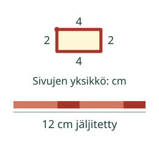
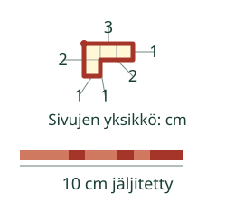

Aava tarvitsee nauhan kortin ympäri. Kuinka pitkä nauha tarvitaan?
Koko reunan pituus
Tavoite: Osaan laskea kuvion koko reunan pituuden. Sitä sanotaan piiriksi.
Kuljeta sormea reunan ympäri takaisin alkuun. Nauha kulkee samaa reittiä. Sisäpuoli ei kuulu nauhaan.

Mieti: Tarvitseeko eri muotoinen kuvio aina eri pituisen nauhan?
Myös mutkat kuuluvat reunaan

Kasvimaan sivut ovat 4 m, 5 m ja 3 m. Aitaan tarvitaan 4 + 5 + 3 = 12 m. Sama laskutapa toimii myös metreillä.
Kokeile itse
Laske koko reuna. Käytä sivujen annettua yksikköä ja vastaa kokonaislukuna. Jäljitys auttaa halutessasi.
Lisää tutkittavaa
Piirrä ruudukkoon suorakulmiot, joiden sivut ovat 4 ja 2 sekä 5 ja 1. Molempien piiri on 12 ruudun sivua. Muoto voi vaihtua, vaikka piiri pysyy samana.
Lopuksi: Miksi kahden vierekkäisen sivun summa ei vielä ole kortin piiri?
Opettajalle ja kokeilu ilman ruutua
Luokat 3–6. Kiedo naru valmiin pahvikuvion reunaan, merkitse yksi täysi kierros ja mittaa suoristettu naru. Vertaile reunan ja sisäpuolen merkitystä. Additiivinen ratkaisu riittää; pinta-alakaavaa tai kertolaskua ei vaadita. Kuvien cm ja m ovat annettuja mallipituuksia, eivät näytöltä mitattavia todellisia mittoja. Tässä harjoituksessa pyydetään kokonaisluku samassa yksikössä kuin annetut sivut. Oikea muunnettu pituus voi olla matemaattisesti yhtä suuri, mutta muunnoksia tai desimaalivastauksia ei harjoitella tällä sivulla. Jäljitys on vapaaehtoinen apu. Tarkistus koskee valitun mallin pituutta ja annettua yksikköä; se ei osoita narulla mittaamisen taitoa tai itsenäistä pysyvää osaamista. Ei oppilashistoriaa.